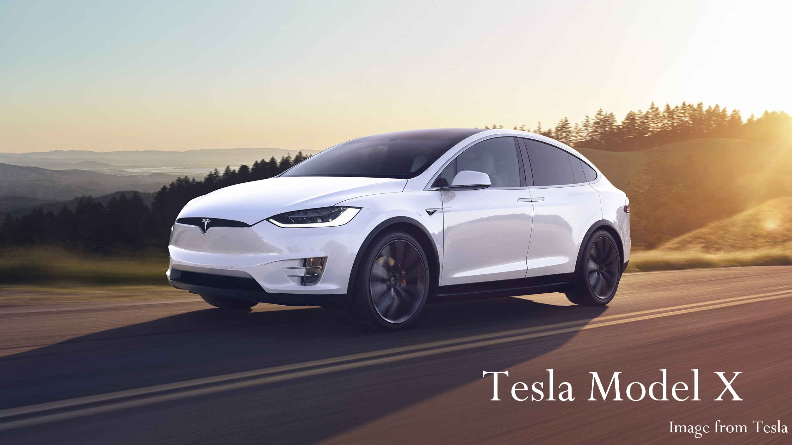
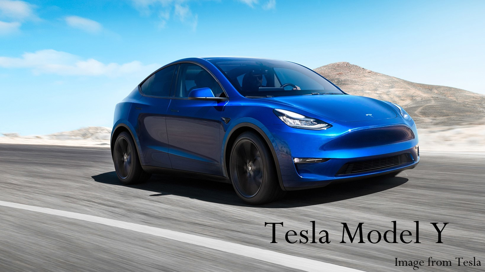
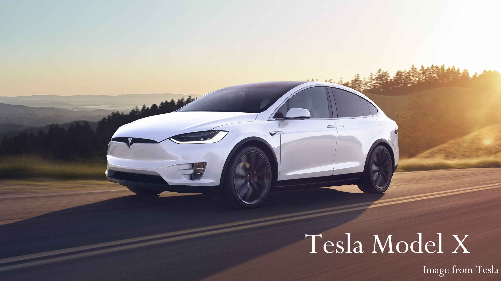
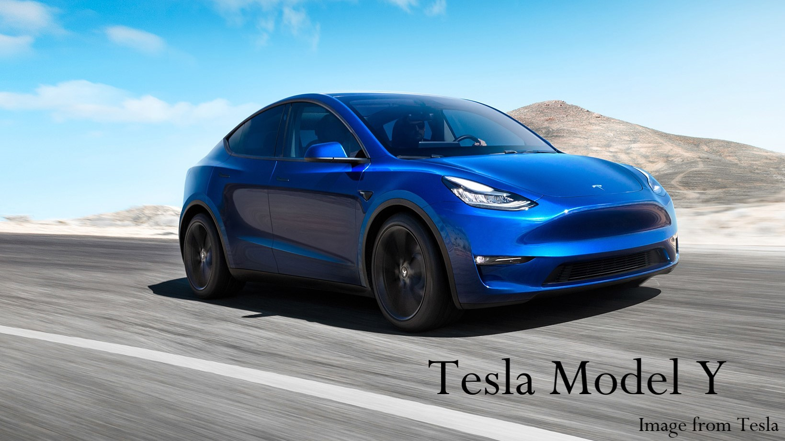

Who is Tesla? Well, in short, the BEST EV company with autonomous driving capabilities
Tesla is an American electric vehicle and clean energy company based in California, USA. Ranked as the world’s most valuable EV maker , Tesla is undoubtedly the market leader in the EV industry. Obviously, Tesla is more than just an EV company - it is also a technology company exploring clean energy and autonomous driving in a mission to accelerate the world’s transition into driving electric vehicles.
Tesla's Arrival To Ireland
Luckily for us, Tesla's Model S and Model X came to Ireland in 2017. The only Tesla store and service centre is located in Sandyford, Dublin. There are three Supercharger locations in Ireland with further sites planned and over forty Destination Charging locations all over the country.
Why choose Tesla?
 



As the Tesla model names suggest, the main reason why you should consider getting a Tesla is because they are S 3 X Y ;). Although the Irish government hasn't legalized the use of self-driving cars on our roads yet, these Tesla cars are still electric-powered, which can reduce fuel costs and gas emissions. Furthermore, there are tests being conducted for self-driving cars on Irish roads so I believe self-driving cars will sooner or later be a normality in Ireland. So why not invested into the future now?
How does autonomous driving work?
Tesla Model Y is the only Tesla car with full self-driving capability but sadly,
as mentioned previously, the self-driving functions are still pending for approval of use :(
So how does a Tesla drive itself? The short answer is, many smart devices are compiled to work together to
create the safest self-driving car, as listed below:
- A forward-facing radar provides a long-range view of up to 160 meters
- 8 rear, side and forward-facing cameras with 360 degree view provide maximum visibility
- A high-precision digitally-controlled electric assist braking system
- 12 long-range ultrasonic sensors to detect nearby cars, prevent collisions, assist with parking and blind-spot monitoring
The cameras, radars and sensors enable the car to steer, accelerate and brake automatically within its lane. The sensors and cameras track the position of cars ahead in order to keep a safe distance, for example, if a car merges into your lane, the Tesla will adjust its position and reduce speed if necessary. The cameras also help to keep the Tesla centered by tracking the positioning of road markings. For the Tesla to change lanes, the driver manually indicates the turn signal, then the sensors prevent the Tesla from merging into other cars.
 Learn about Nio
Learn about Nio  Learn about Arrival
Learn about Arrival